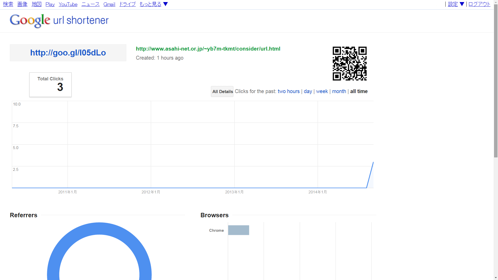

短縮URLの活用法！
短縮URLとは読んで字の如く、長いURLを短くしたものです。
例えば、https://www.youtube.com/channel/UCePvzzyzKmdEslQ7y3XTUIAというURLを短縮すると
http://goo.gl/n6sVMMと簡単に短くすることができます。
でもでも、それだけではなくって極簡単にアクセス解析や、QRコードを作ることもできるんです！
今回はそれらの機能に着目して書いていきます。
例えば、https://www.youtube.com/channel/UCePvzzyzKmdEslQ7y3XTUIAというURLを短縮すると
http://goo.gl/n6sVMMと簡単に短くすることができます。
でもでも、それだけではなくって極簡単にアクセス解析や、QRコードを作ることもできるんです！
使い方
使い方はとても簡単です。URLを短縮してくれるサイトがあるので、そこに短縮したいURLを打ち込むだけ。これで終わりです。
サイトはかなりの種類がありますが、この記事ではGoogleのGoogle url shortenerを使って説明します。サイト名よりURLの方が短い……
リファラーなんて面白いと思うんです。ツイッターから来てる来てる、宣伝効果は充分のようだな！ウシシ……とかね
サイトはかなりの種類がありますが、この記事ではGoogleのGoogle url shortenerを使って説明します。サイト名よりURLの方が短い……
- テキトウなURLをコピーしておきましょう。自分のブログでも、このサイトのURLでも。
- Google url shortenerを開くと「Paste your URL here:」と書いてあると思うので、そのすぐ下に用意したURLを入力してください
- 「Shorten URL」をクリックしましょう。
いよいよアクセス解析とQRコードの方法です。これはもっと簡単にできます。
短縮URLの最後に+をつけて開いてみてください。完成です。 ※全角で打つと失敗します。

QRコードを右クリックして画像を保存すればブログに付けようが、名刺に付けようが思いのまま！
では、アクセス解析の結果を見ていきます。
{kind=link}
| Total Clicks | まんま、クリックされた総数 |
| Referrers | リファラーです。リファラーとは解析の対象（今回は短縮したURL）に飛ぶ前に見ていたページの情報です。 |
| Browsers | どのブラウザでアクセスされたか |
| Countrise | どこの国からアクセスされたか。 地図にマウスを押すと個別のアクセス数が確認できる。 |
| Platforms | どのOSからアクセスされたか |
いろいろな短縮サイト
親しみやすいかな？と思い今回の記事ではGoogleを利用しましたが、世には膨大な数の短縮サイトがあります。とは言え、どこも機能は似たり寄ったりです。ですのであまり機能が重複せず、自分が使って見て面白いと思ったものを紹介していきたいと思います。
カスタムURLはbitlyなんかだと注意が出てくれるのですが、そこが欠点ですね。機能がここまで揃ってるのは良いですね。他のサイトはQRコードできなかったり、カスタムURLできなかったりと何か欠けてるのが多いです。
上には書いていませんが、管理画面でURLを検索できるのは便利だと思います。
ul.lc
触ったモノの中では、一番の高機能かも。- QRコード生成
- アクセス解析
解析結果は短縮したURLとは別にもうひとつURLが作られ、そこにアクセスすると見られる。
解析できるのは、訪問者数、国、リファラー、ブラウザ、OSとなっていてGoogleと同じ。 - パスワードの設定
- 有効期限の設定
- カスタムURLの設定
ul.lc/の後に自分の好きな文字を設定できる、が
他に設定されているURLと被ると、被ったサイトに飛ばさる。
この機能を使った場合、ちゃんと短縮できているか確認すること。 - ログインすると今までに短縮したURLを管理することができる
短縮URLのリンクを切ることや、
アクセス解析のURLを忘れても解析ページにアクセスできる。
カスタムURLはbitlyなんかだと注意が出てくれるのですが、そこが欠点ですね。機能がここまで揃ってるのは良いですね。他のサイトはQRコードできなかったり、カスタムURLできなかったりと何か欠けてるのが多いです。
上には書いていませんが、管理画面でURLを検索できるのは便利だと思います。
Ow.ly
このサイトはQRコードもアクセス解析も出来ないのですが、ログインが必要ですが画像やテキストファイルをURLにしてくれるのです。わざわざUSBを使ったり、メールの容量を気にしなくてもOKなわけです。もうひとつの特徴としてはAPIが取得できることですね。その他、おもしろサイト
num.to：数字だけで短縮されます。
ワクテカ短縮：ドメインがwk.tk
になる。
nazr.in：東方のキャラクターナズーリン
がかわいい。